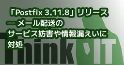
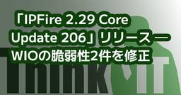
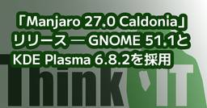

Think IT（シンクイット）
https://thinkit.co.jp/
【Think IT】“オープンソース技術の実践活用メディア” をスローガンに、インプレスグループが運営するエンジニアのための技術解説サイト。開発の現場で役立つノウハウ記事を毎日公開しています。
フィード

「Postfix 3.11.8」リリース ─ メール配送のサービス妨害や情報漏えいに対処
Think IT（シンクイット）
「Postfix 3.11.8」リリース ─ メール配送のサービス妨害や情報漏えいに対処 旧6系列も同時更新、TLSのバージョン指定やエイリアスの設定に注意kawahara2026年11月29日シェア ポスト はてブ 優先するニュース提供元に追加 Postfix開発チームは11月22日(現地時間)、オープンソースのメール転送エージェント(MTA)「Postfix 3.11.8」をリリースした。「Postfix 3.11.8」のハイライトは次の通り。 宛先サーバーの名前解決が繰り返しタイムアウトすると、メール配送処理が長時間占有されるおそれがあった。今回の変更では、個々のDNS問い合わせではなく、配送要求1件に伴うIPアドレス検索の合計時間に上限を設けた。極端に遅い回線から多数の配送先候補を持つドメインへ送信する環境では、この上限が配送に影響する場合がある。 Postfixは、Webサイトから入手できる。(川原 龍人/びぎねっと)[関連リンク]リリースアナウンスリリースノート この記事をシェアしてください シェアする ポストする >ブクマする noteで書く 優先するニュース提供元にThink ITを追加 前の記事「IPFire 2.29 Core Update 206」リリース ─ WIOの脆弱性2件を修正 関連記事この記事の筆者 kawahara kawaharaのプロフィールを見る 筆者の人気記事 Linuxカーネルに重要な脆弱性「CVE-2026-98432」─ IPv4経由で遠隔DoSのおそれ10月31日 0:54 「Apache HTTP Server 2.4.69」リリース ─ 20件の脆弱性を修正10月3日 23:23 「Python 3.15.2/3.14.10/3.13.18/3.12.16/3.11.18」リリース ─ 侵害されたeMudhraのCA鍵をブロック10月26日 16:52 「PHP 8.5.12」など4系列を緊急リリース ─ CriticalのRCE脆弱性2件を修正10月22日 10:29 「Raspberry Pi OS」2026年10月6日版リリース ─ デスクトップ環境を改善10月8日 1:51 「Ubuntu 26.10」リリース ─ Rust製coreutilsへ全面移行10月15日 23:25 業界情報やナレッジが詰まっ
1時間前

「IPFire 2.29 Core Update 206」リリース ─ WIOの脆弱性2件を修正
Think IT（シンクイット）
「IPFire 2.29 Core Update 206」リリース ─ WIOの脆弱性2件を修正 Web管理画面の翻訳基盤を刷新、ThreatFoxルールの取得には認証キーが必要にkawahara2026年11月29日シェア ポスト はてブ 優先するニュース提供元に追加 IPFire.orgは11月24日(現地時間)、ファイアウォール向けLinuxディストリビューション「IPFire 2.29 Core Update 206」をリリースした。 「IPFire」は、ネットワークの境界で通信を制御するオープンソースのファイアウォール向けLinuxディストリビューション。Webブラウザから設定を管理でき、VPNや侵入防止システム（IPS）などの機能を備える。 「IPFire 2.29 Core Update 206」のハイライトは次の通り。 IPFireは、x86-64およびAArch64向けのISOイメージとフラッシュイメージがWebサイトからダウンロードできる。(川原 龍人/びぎねっと)[関連リンク]リリースアナウンス この記事をシェアしてください シェアする ポストする >ブクマする noteで書く 優先するニュース提供元にThink ITを追加 前の記事「MariaDB Community Server 13.1.2」リリース ─ DENY文とMySQL互換のJSON演算子を追加 次の記事「Postfix 3.11.8」リリース ─ メール配送のサービス妨害や情報漏えいに対処 関連記事この記事の筆者 kawahara kawaharaのプロフィールを見る 筆者の人気記事 Linuxカーネルに重要な脆弱性「CVE-2026-98432」─ IPv4経由で遠隔DoSのおそれ10月31日 0:54 「Apache HTTP Server 2.4.69」リリース ─ 20件の脆弱性を修正10月3日 23:23 「Python 3.15.2/3.14.10/3.13.18/3.12.16/3.11.18」リリース ─ 侵害されたeMudhraのCA鍵をブロック10月26日 16:52 「PHP 8.5.12」など4系列を緊急リリース ─ CriticalのRCE脆弱性2件を修正10月22日 10:29 「Raspberry Pi OS」2026年10月6日版リリース ─ デ
1時間前
「MariaDB Community Server 13.1.2」リリース ─ DENY文とMySQL互換のJSON演算子を追加
Think IT（シンクイット）
「MariaDB Community Server 13.1.2」リリース ─ DENY文とMySQL互換のJSON演算子を追加 「utf8」は既定で「utf8mb4」を指すように変更、13.2系列のリリース候補版も公開kawahara2026年11月29日シェア ポスト はてブ 優先するニュース提供元に追加 MariaDB Foundationは11月24日(現地時間)、オープンソースのリレーショナルデータベース管理システム「MariaDB Community Server 13.1.2」の正式公開を発表した。リリース日は11月23日で、同日には次期系列のリリース候補版「13.2.1」も公開された。 MariaDBは、MySQLから派生したデータベース管理システム。13.1.2は13.1系列で初の正式版で、四半期ごとに新機能を提供するローリングリリースに当たる。「MariaDB 13.1.2」のハイライトは次の通り。 「DENY」を利用すると、例えばデータベース全体に読み取り権限を付与したうえで、特定のテーブルだけを対象外にできる。後から「GRANT」で権限を付与しても拒否は解除されず、解除には「REVOKE DENY」を使う。 また、「13.1.2」ではCVE-2026-101796、CVE-2026-101679など13件の脆弱性修正が公表された「12.3.4」の修正も取り込んでいる。12.3.4は11月16日に、11.8.10、11.4.14、10.11.20とともにLTS系列の保守更新として公開されたもの。13.1系列には今後の修正版が予定されていないため、長期保守を重視する環境では12.3 LTSの利用が推奨される。 MariaDBは、Webサイトから入手できる。(川原 龍人/びぎねっと)[関連リンク]ニュースリリースリリースノート(13.1.2)リリースノート(13.2.1) この記事をシェアしてください シェアする ポストする >ブクマする noteで書く 優先するニュース提供元にThink ITを追加 前の記事「Manjaro 27.0 Caldonia」リリース ─ GNOME 51.1とKDE Plasma 6.8.2を採用 次の記事「IPFire 2.29 Core Update 206」リリース ─ WIOの脆弱性2件を修正 関連記事この記
2時間前

Kaggleは「仲間づくり」に役立つ ー孤独なデータ分析に、同じ課題で語り合える場をくれた
Think IT（シンクイット）
Kaggleは「仲間づくり」に役立つ ー孤独なデータ分析に、同じ課題で語り合える場をくれたitoh2026年11月27日Kaggleは「○○」に役立つシェア ポスト はてブ 優先するニュース提供元に追加 はじめにIT企業で、主に製造業向けにAIの導入・促進を行っている畑といいます。最近はKaggleに参加できていませんが、8年ほど前の自然言語のコンペにチームで参加しCompetitions Masterに、4年ほど前にNFLコンペにてチームで入賞しました。元々は製造業で働いていましたが、Kaggleでのご縁もあって、現在のIT企業で働いています。 そんな過去の経験から、データ分析という仕事は意外と孤独な仕事だと思っています。もちろん、実務では多くの人と関わります。依頼者がいて、関係部署がいて、結果を説明する相手もいます。誰かと相談しながら進める場面も少なくありません。ただ、いざデータに向き合う時間になると、最後は自分ひとりで考える時間が多いのではないでしょうか。この欠損値はどう扱うべきか。この特徴量は本当に意味があるのか。このモデルの精度は、業務上どこまで信じて良いのか。そうした細かい判断は、担当している本人にしか分からないです。同じ部署にデータ分析をしている人がいても、扱っているデータや業務領域が違えば、意外と会話がかみ合わない場合もあります。その意味で、Kaggleは技術を学ぶ場であると同時に、同じ課題について話せる人と出会える場でもあります。この記事では、Kaggleが「分析能力の向上」や「キャリア」に役立つという話から少し離れて、Kaggleは仲間づくりに役立つという話をしたいと思います。Kaggleでよく語られる価値Kaggleの価値としてよく挙げられるのは、分析能力の向上、トップ層の考え方を学べる、そしてメダルや称号によるスキルの証明です。これらは大きな価値です。Kaggleでは同じデータ、同じ評価指標、同じ締切の中で、多くの参加者がより良い解法を探します。公開Notebookを読むだけでも、データの見方、特徴量の作り方、バリデーションの設計、モデルの組み方などを学べます。コンペ終了後には、多くの上位者が解法を公開してくれます。自分では思いつかなかったアプローチに触れられるのは、Kaggleならではの面白さです。また、上位に入ればメダルが付与されます。メ
2日前
MySQLの「ST_PointN()」「ST_InteriorRingN()」などの関数で線の頂点やポリゴンの穴を取り出してみよう
Think IT（シンクイット）
はじめに前回は、ジオメトリの素性を知る関数や、点から座標を取り出す関数を紹介しました。今回はその続きです。線を構成する頂点の要素を取り出したり、ポリゴンに空いた穴に関する情報を得る方法を紹介します。今回紹介する関数ジオメトリを構成する情報を得る関数群として、今回は以下のものを紹介します。 ST_StartPoint(g) 線の始点 ST_EndPoint(g) 線の終点 ST_PointN(g, n) 線のn番目の頂点 ST_NumInteriorRings(g) 内側の輪の数 ST_InteriorRingN(g, n) n番目の内側の輪前半の3つはLINESTRINGを、後半の2つはPOLYGONを相手にする関数です。前回は様々な型に適用できる関数が多めでしたが、今回は使える型が限定されるものばかりです。それでは、順に紹介していきます。前回のテーブルとデータを使いますデータは、前回作成した g30 テーブルをそのまま使います。前回で紹介した関数を駆使して、データの概要を確認してみましょう。mysql> SELECT id, memo, ST_GeometryType(geom), ST_SRID(geom) -> FROM g30 ORDER BY id;+----+------------------+-----------------------+---------------+| id | memo | ST_GeometryType(geom) | ST_SRID(geom) |+----+------------------+-----------------------+---------------+| 1 | point_non_srs | POINT | 0 || 2 | point_with_srs | POINT | 6668 || 3 | line_non_srs | LINESTRING | 0 || 4 | line_with_srs | LINESTRING | 6668 || 5 | linering_w_srs | LINESTRING | 6668 || 6 | poly_non_srs | POLYGON | 0 || 7 | poly_with_srs | POLYGON | 6668 || 8 | poly_inval_
2日前

「Manjaro 27.0 Caldonia」リリース ─ GNOME 51.1とKDE Plasma 6.8.2を採用
Think IT（シンクイット）
「Manjaro 27.0 Caldonia」リリース ─ GNOME 51.1とKDE Plasma 6.8.2を採用 安定版ブランチを更新、PlasmaはWayland専用に。新規導入用ISOも公開kawahara2026年11月27日シェア ポスト はてブ 優先するニュース提供元に追加 Manjaro.orgは11月23日(現地時間)、Linuxディストリビューション「Manjaro 27.0 Caldonia」をリリースした。 「Manjaro」は、Arch Linuxをベースとするローリングリリース方式のディストリビューション。既存環境にはパッケージ更新を通じて新しい機能や修正が配信される。今回のISOは更新済みのインストールメディアであり、既存利用者が再インストールする必要はない。 「Manjaro 27.0」のハイライトは次の通り。 Linux 7.2系列は7.2.15を最後に保守が終了した。開発チームは、同系列の利用者にLinux 7.3系列または長期サポート版のLinux 6.18系列などへの移行を促している。また、安定版の告知では、侵害された中間認証局の証明書を除外した「ca-certificates-mozilla」への更新と、PHPの脆弱性2件（CVE-2026-109618、CVE-2026-109619）への対処についても注意喚起を発表している。 Manjaroは、Webサイトから入手できる。(川原 龍人/びぎねっと)[関連リンク]Manjaro 27.0GitHub(Manjaro Cinnamon コミュニティ版) この記事をシェアしてください シェアする ポストする >ブクマする noteで書く 優先するニュース提供元にThink ITを追加 前の記事「PostgreSQL 19」リリース ─ 読み書きを止めずにテーブルを再編成 次の記事「MariaDB Community Server 13.1.2」リリース ─ DENY文とMySQL互換のJSON演算子を追加 関連記事この記事の筆者 kawahara kawaharaのプロフィールを見る 筆者の人気記事 Linuxカーネルに重要な脆弱性「CVE-2026-98432」─ IPv4経由で遠隔DoSのおそれ10月31日 0:54 「Apache HTTP Server 2.4.69
2日前
「PostgreSQL 19」リリース ─ 読み書きを止めずにテーブルを再編成
Think IT（シンクイット）
「PostgreSQL 19」リリース ─ 読み書きを止めずにテーブルを再編成 REPACKや実行計画制御を追加、論理レプリケーションと非同期I/Oも強化kawahara2026年11月27日シェア ポスト はてブ 優先するニュース提供元に追加 PostgreSQL Global Development Groupは11月19日(現地時間)、オープンソースのリレーショナルデータベース管理システム(RDBMS)「PostgreSQL 19」をリリースした。 「PostgreSQL」は、標準SQLへの対応、トランザクションの信頼性、拡張性などを特徴とするオブジェクトリレーショナルデータベース管理システム。Webサービスや業務システム、分析基盤など幅広い用途で利用されている。 「PostgreSQL 19」では、テーブルの空き領域を回収してデータを再配置する「REPACK」コマンドを追加した。実行計画を制御する拡張機能や、論理レプリケーション、autovacuum、非同期I/O、監視機能なども強化されている。ハイライトは次の通り。 論理レプリケーションでは、最初の論理レプリケーションスロットを作成した際に、実効的なWALレベルを自動的に「logical」へ引き上げるようになった。また、シーケンス値を配信できるようになったほか、待機系が指定したWAL位置まで反映するのを待つ「WAIT FOR LSN」も追加された。 PostgreSQL 19はメジャーリリースであり、旧版からデータディレクトリをそのまま利用することはできない。「pg_upgrade」、ダンプ／リストア、論理レプリケーションのいずれかを使用して移行する必要がある。全文検索や「pg_trgm」などを利用している一部の環境では、アップグレード後のインデックス再作成も推奨されている。 PostgreSQLは、Webサイトからダウンロードできる。(川原 龍人/びぎねっと)[関連リンク]リリースアナウンスリリースノート この記事をシェアしてください シェアする ポストする >ブクマする noteで書く 優先するニュース提供元にThink ITを追加 前の記事「DietPi 10.9」リリース ─ Odroid C5やOrange Pi 6などに対応 次の記事「Manjaro 27.0 Caldonia」リリース ─ G
2日前
現場に即応するオンプレミスの「推論基盤」が、AIモデルを業務の成果につなげる
Think IT（シンクイット）
現場に即応するオンプレミスの「推論基盤」が、AIモデルを業務の成果につなげるitoh2026年11月26日「インプレス AI Days 2026」レポートシェア ポスト はてブ 優先するニュース提供元に追加 Sponsored by: レノボ・エンタープライズ・ソリューションズ合同会社提供：レノボ・エンタープライズ・ソリューションズ合同会社AI(人工知能)の活用推進に向け、学習済みのAIモデルを業務の現場で動かす推論基盤の整備が、企業にとって新たな課題になっている。レノボ・エンタープライズ・ソリューションズ Japan ISG CTO(最高技術責任者)の早川 哲郎 氏が「インプレス AI Days 2026」(主催：インプレス、2026年9月15～16日)に登壇し、推論基盤に求められる要件と、オンプレミス整備の課題解決に向けたアプローチを解説した。「AI(人工知能)技術の活用が実証から運用の段階に入り、基盤の整備方法に悩む企業は多い。判断の出発点として、まずAI処理の中身を把握すべきだ」--。レノボ・エンタープライズ・ソリューションズ Japan ISG CTO(最高技術責任者)の早川 哲郎 氏は、AI基盤整備のポイントをこう解説する(写真1)。 写真1：レノボ・エンタープライズ・ソリューションズ Japan ISG CTO(最高技術責任者)の早川 哲郎 氏学習と推論でAI基盤の要件は異なるAIの処理は大きく、AIモデルの精度を高めるために膨大なパラメーターを更新する「学習」と、完成したモデルを使ってデータを処理する「推論」に分かれる。早川氏によると「両者が基盤に求める要件は大きく異なり、整備のアプローチも変わる」という(図1)。 図1：「学習」と「推論」では処理に用いるデータやリソース量が異なる学習は、大規模なコンピュートリソースを使い、大量のデータを数日から数カ月かけて計算する。そのため、潤沢なリソースを確保しやすいクラウドで処理するのが一般的だ。一方の推論は、AIモデルを現場で使い、業務の効率化や新たな価値の創出につなげることが目的になる。必然的に「現場で取得したデータを数ミリ秒単位でリアルタイム処理する性能が基盤の要件となる」(早川氏) 学習と推論はいずれも重要だ。ただ、優れたモデルを開発しても実業務に生かせなければビジネスの成果にはつながらない。早川氏は「
3日前
【AI時代のコンテンツの価値】なぜ人々は意味のないAI動画に惹かれるのか？
Think IT（シンクイット）
【AI時代のコンテンツの価値】なぜ人々は意味のないAI動画に惹かれるのか？kaoringo2026年11月26日Gen AI Timesシェア ポスト はてブ 優先するニュース提供元に追加 本連載は、生成AIコミュニティ「IKIGAI lab.」で活動するメンバーが、それぞれの専門領域で培ってきた知見を持ち寄りながら、生成AIを取り巻く動向を技術・ビジネス・ガバナンスの観点から整理しお届けしています。SNSを眺めていると、奇妙な動画が次々と流れてくることがあります。現実にはあり得ない光景が展開されたり、意味の分からない音声が繰り返されたり。映像としての完成度が高いわけでも、ストーリーに深い意味があるわけでもありません。それなのに、つい最後まで見てしまったり、次の動画を探してしまったりした経験はないでしょうか。こうした動画の中には、生成AIを使って作られたものが数多くあります。例えば、2025年初頭にSNSで流行した「イタリアンブレインロット(以降、ブレインロットと省略)」もその1つです。ブレインロット(Brain rot)とは直訳すると「脳の腐敗」という意味で、中身の薄いネット動画やSNSの投稿を浴びるように見続けた結果、頭がぼんやりして思考力が落ちたように感じる状態を指す俗語です。なぜ、私たちは一見すると意味のない動画に引きつけられるのでしょうか。本稿では、AI動画を見続けてしまう心理と、AI時代のコンテンツの制作過程を整理します。SNSで広がる、AIが生み出した奇妙な動画ブレインロットは、動物と別の物体を組み合わせたようなAI生成画像や動画に、イタリア語風の名前や合成音声を組み合わせたミーム(インターネット上で広く拡散されたコンテンツ)です。初期の例として知られるのが、青いスニーカーを履いたサメのキャラクター「Tralalero Tralala」です。Know Your Memeによると、関連する音声は2025年1月初旬にTikTokユーザーの@eZburger401が投稿したものとされています。その後、別のユーザーが音声を使った動画を投稿し、1月13日には@amoamimandy.1aが青いスニーカーを履いたサメの画像を組み合わせた動画を公開しました。この動画が大きく拡散したことで、関連するキャラクターや動画が次々と生まれ、流行が広がっていきました。なお、最初
3日前

【KubeCon Japan 2026】エンジニアが業務とOSSへの貢献を両立できるソフトバンクの秘訣とは？
Think IT（シンクイット）
【KubeCon Japan 2026】エンジニアが業務とOSSへの貢献を両立できるソフトバンクの秘訣とは？iioka2026年11月26日KubeCon＋CloudNativeCon Japan 2026レポートシェア ポスト はてブ 優先するニュース提供元に追加 オープンソースに対する貢献にはコードの修正やドキュメント作成、コミュニティイベントの運営などさまざまな形態が存在する。どれもコミュニティを維持するためには必須だが、何よりも重要なのはプロジェクトに対してコードを提供することだろう。初期のバージョンから徐々に機能を追加したり、脆弱性を修正したりしながらプロジェクトは前に進んで行く。利用する企業や組織が増えればさまざまな使い方に対応するように機能は拡充されていく。企業のシステムの中でオープンソースソフトウェアが使われる際に、システム開発の過程で利用するオープンソースソフトウェアに修正すべきバグが見つかることやユースケースに合わせて機能を追加、変更したい状況は往々にして起こる。その時に開発を行うエンジニアが取るべき正しい選択は「修正／追加されたコードはコミュニティに還元する」ことだ。しかしそれを企業向けシステム開発の途中に行うことは困難を伴うと言える。企業の中で社内向けや顧客向けのソフトウェア開発をすることとオープンソースプロジェクトの中でコードを書くこと、コードのレビューを行うことは異なるベクトルの仕事だ。企業の中では組織の力学の中でその組織のルールを守りながら社員同士や外部のパートナーなどと協力しながら、ゴールに向かって計画通りタスクをこなしていくことが求められる。一方オープンソースプロジェクトでは、独自のタイムラインや作法に基づいて活動が行われる。コードの提供についてもプロジェクト独自のルールが存在し、企業の命令系統とは異なる統制が存在する。会社に所属するエンジニアが、組織の目的とは異なるソフトウェア開発を行おうとすれば、就業時間外に行うことが求められるだろう。企業によっては戦略的にオープンソースを選択し、本業の戦略に合ったソフトウェアとして位置付け、貢献することが自身のビジネスの推進のためになることを選択する場合もある。しかし多くの場合、企業の中では使っていてもそのプロジェクトに対する貢献が直接、ビジネスの結果に結びつかないという判断から、ボランティア
3日前

連載の最終回：全31回で積み上げたDevOpsのサイクルを振り返る
Think IT（シンクイット）
連載の最終回：全31回で積み上げたDevOpsのサイクルを振り返るitoh2026年11月25日実践で学ぶDevOpsツールの使いこなし術シェア ポスト はてブ 優先するニュース提供元に追加 はじめに第1回で、DevOpsとは「開発と運用が“いい感じ”にコラボレーションすることだ」と書きました。誰が何をすればDevOpsなのかという定義はなく、お互いにリスペクトし合って協力しましょうという、曖昧な言葉です。曖昧な言葉のままでは、始めようにも何から手を付けてよいか分かりません。そこで本連載は、思想の話を最小限にとどめ、ツールを1つずつ動かすことでサイクルを組み立ててきました。また、第1回では「Dev vs Ops」を「Dev and Ops」へ変えるために必要なことも書きました。変更のリスクを下げること、そして障害が起きても復旧する能力を高めることです。最終回となる今回は、DevOpsの解説ではなく、連載そのものを振り返ます。全31回の地図を示したうえで、第1回に書いたこの2点を連載の宿題と見立て、どこまで応えられたのかを確かめます。全31回の一覧は、連載ページからも参照できます。 本連載の全31回で構築したDevOpsサイクル連載の地図変更が入る入口を整えた【第2〜9回】第2回： 「GitHub」にリポジトリを作成してみよう第3回： 「GitHub」にブランチ保護、Dependabot、Secret Scanningを設定してみよう第4回： 「Git」のブランチ戦略の基本とルールを学んで使いこなそう第5回： 「Visual Studio Code」を使いこなすために知っておきたい基本設定と拡張機能第6回： 「Visual Studio Code」でチーム開発するなら「共通設定」を整えよう第7回： 「Visual Studio Code」で「Git」「GitHub」をはじめよう！「拡張機能」で簡単リポジトリ操作第8回： 「Git」によるスムーズなチーム開発を支えるルール作りと活用法を学ぼう第9回： DevOpsを支えるレビュー運用の基本とGitHub活用法GitHubのブランチ保護ルールを設定し、レビューを経ないコードを main へ入れない状態にしました。Secret Scanningは誤ってコミットした機密情報を検知します。この土台の上でGitHub Flowとい
4日前

Open Source Summit Korea 2026からLinuxカーネルのメンテナーGreg Kroah-Hartman氏のインタビューを紹介
Think IT（シンクイット）
Open Source Summit Korea 2026からLinuxカーネルのメンテナーGreg Kroah-Hartman氏のインタビューを紹介iioka2026年11月25日Open Source Summit Korea 2026レポートシェア ポスト はてブ 優先するニュース提供元に追加 Open Source Summit Korea 2026から、LinuxカーネルのメンテナーであるGreg Kroah-Hartman氏のインタビューを紹介する。Greg Kroah-Hartman氏はカーネルデベロッパーとしてLinuxカーネルの開発を行いながら、The Linux Foundation（LF）のカンファレンスでは頻繁に登壇し、セキュリティやデベロッパー体験、ヨーロッパのCRAに対応するオープンソース側の対応などについても解説を行っている。Linuxを最初に開発したLinus Torvalds氏がスライドとプレゼンテーションという形態の登壇を嫌い、対談という形でしかカンファレンスに登壇しないのに比べて、Greg Kroah-Hartman氏は常識的なプレゼンテーションを行えるため、LFにとってはありがたい存在だろう。 この記事では初日のキーノートで行われたKroah-Hartman氏のセッションのスライドも差しはさみながら、生成AIについてのコメント、カーネル開発における生成AIの位置付けなどを聞いた。現在では多くのデベロッパーが生成AIを使って日常の仕事をこなしています。しかしまだ生成AIが作るコードが100％正しいということはありませんよね。そのようなツールを使うことについてはどう思いますか？Hartman：生成AIが作るもののうちまだ3分の1は誤っているというのが認識としては正しいんじゃないかな。ただ私にとっては、生成AIもこれまで作られてきた数多くのツールのひとつに過ぎないということだ。だから良いものもあれば悪いものもある。 品質が悪いということが気にはなりませんか？Hartman：ならないね。なぜなら私は生成AIを作るエンジニアではなくLinuxカーネルを作るエンジニアだから。生成AIのエンジニアはこれからもっと仕事をして、継続的に良いものを作ると思うけど、私はそれを使う側だ。ただひとつ付け加えると、生成AIがコーディングにおいて間違いを起
4日前
「DietPi 10.9」リリース ─ Odroid C5やOrange Pi 6などに対応
Think IT（シンクイット）
「DietPi 10.9」リリース ─ Odroid C5やOrange Pi 6などに対応 Raspberry Pi向けファン制御を追加、Paperless-ngxやPodmanも導入可能にkawahara2026年11月25日シェア ポスト はてブ 優先するニュース提供元に追加 DietPi development teamは11月21日(現地時間)、軽量Linuxディストリビューション「DietPi 10.9」をリリースした。 「DietPi」は、Debianを基盤としてシングルボードコンピュータや小型PC向けに最適化されたLinuxディストリビューション。最小限の構成から用途に応じたソフトウェアを選択して導入でき、Raspberry Pi、Odroid、Orange Pi、Rockchip搭載ボード、x86-64 PC、仮想マシンなどに対応する。 「DietPi 10.9」では、Odroid C5、Orange Pi 6／6 Plus、Orange Pi Zero 4、Orange Pi 4Aのインストールイメージを新たに追加した。また、Raspberry Piの冷却ファンを温度に応じて制御する「dietpi-fan_control」や、新しいソフトウェア導入項目が追加されている。 「DietPi 10.9」のハイライトは次の通り。 新しい「dietpi-fan_control」では、GPIOへ接続したファンをハードウェアPWM、ソフトウェアPWM、単純なオン／オフのいずれかで制御できる。温度、ヒステリシス、ファン速度を動作点ごとに設定でき、Raspberry Pi 5では専用PWMファン端子の動作点にも対応する。ハードウェアPWM用の「pwm-fan」オーバーレイはDebian 13「Trixie」以降で利用できるが、Raspberry Pi 5では対象外となる。 Diet Piは、Webサイトから入手できる。(川原 龍人/びぎねっと)[関連リンク]リリースノートRelease(GitHub) この記事をシェアしてください シェアする ポストする >ブクマする noteで書く 優先するニュース提供元にThink ITを追加 前の記事Arch Linux向けパッケージ管理ツール「Shelly-ALPM 3.4.0」リリース ─ fwupdによるファームウェア
4日前
AIエージェントに送金を任せる前に ――OSS「Agent Role Contracts」で実行前の矛盾を検査する
Think IT（シンクイット）
AIエージェントに送金を任せる前に ――OSS「Agent Role Contracts」で実行前の矛盾を検査するitoh2026年11月24日テクニカルレポートシェア ポスト はてブ 優先するニュース提供元に追加 AIエージェントが作成した送金案を人間が承認した。その送金案が実行直前に変更されていたら、誰が気付くだろうか。変更後も送金上限以内だとしても、承認した内容と実行予定が違えば問題になる。複数のAIやシステムを経由する作業では、人間がすべての変更を追う負担も大きい。Netsujo株式会社が2026年10月15日にv1.0.0を正式公開したOSS「Agent Role Contracts(ARC) v1.0.0」は、役割、権限、作業範囲、レビュー、引き継ぎなどの宣言を実行前に検査するツールだ。架空のオンチェーン送金デモで、その働きと実用価値を確かめる。ここで共有する内容はコーディングエージェントの書き込み範囲やレビュー分離、SRE業務の引き継ぎにも応用できるだろう。送金案が許可条件を満たしているかある企業が経理業務の一部をAIエージェントに任せるとしよう。AIが送金案を作り、レビュー担当者が確認し、権限を持つ人間が承認する。承認された案は、送金を実行する別のシステムへ引き継がれる。企業は利用可能なネットワーク、送金先、資産、金額上限を事前に定める。例えば、Ethereumのテストネット「Sepolia」で特定のERC-20トークンを送ることを認めたとする。ERC-20はEthereumで使われるトークンの規格だ。送金上限をトークンの最小単位で500000000とし、AIが250000000の送金を提案した。ネットワークと送金先も許可条件に合っている。ネットワークをEthereumメインネットへ変えれば許可外の操作になる。金額を500000001にすれば、上限を最小単位で1超える。ARCの金融向けプロファイルは、信頼できるポリシーと送金案のJSONを照合する。ネットワークを識別するチェーンIDがSepoliaの11155111からメインネットの1に変わればFINANCE_CHAIN_NOT_ALLOWED、金額が上限を超えればFINANCE_TRANSFER_LIMIT_EXCEEDEDを返す。第三者にトークン利用を許可する「Approve」も対象だ。無制限の利
5日前
Apple「Vision Pro」の新機能をお披露目、Robloxがゲーム開発チーム支援プログラムの応募受付開始 ほか
Think IT（シンクイット）
Apple「Vision Pro」の新機能をお披露目、Robloxがゲーム開発チーム支援プログラムの応募受付開始 ほかiioka2026年11月24日週刊VRウォッチシェア ポスト はてブ 優先するニュース提供元に追加 今週も、バーチャル領域の最新動向をお届けします。Appleはイマーシブメディア制作者向けイベントを開催し、Vision Pro向けコンテンツ制作を支える新機能や新ツールを公開しました。Robloxからは、開発チームへの手厚いコーチングや制作支援を提供するプログラム「Incubator」の来年度の募集開始が発表されています。さらに、3D空間再現技術で注目を集めた「Volinga」のツール提供終了とAI部門への統合、そして音響機器メーカーShureによる手軽に360度空間オーディオが収録できる新型マイクロホン「MV360」の発表など、注目のニュースをご紹介します。Apple「Vision Pro」向けイマーシブ映像の制作者イベントを開催、新機能やツールをお披露目 Appleは開発者センターにて、空間コンピュータ向けのイマーシブメディア制作者向けイベントを開催し、Apple Vision Proの制作環境に関する新機能や新ツールを発表しました。visionOS 27ではパノラマ写真を空間シーンに変換する機能や、4K・30fpsでの高画質な視界録画、Mac上の空間コンテンツをVision Proで確認できる空間プレビュー機能などが導入され、制作環境が大幅に強化されます。一方、音響面ではBlackmagic Designが共同開発した108基のMEMSマイク搭載の空間オーディオ用マイクを発表し、12月に出荷予定です。また、独立系作品がApple TVアプリで検索可能になるほか、2027年初頭には外部制作者向けのライブ配信制作ツールを整える計画も示されました。本ニュースの詳細はこちら：Apple「Vision Pro」向けイマーシブ映像の制作者イベントを開催、新機能やツールをお披露目https://www.moguravr.com/apple-immersive-media-creators-event/Roblox、ゲーム開発チーム支援プログラム「Incubator」応募受付を開始 Robloxは、ゲーム開発チーム支援プログラムである「Incubator」の翌
5日前

Arch Linux向けパッケージ管理ツール「Shelly-ALPM 3.4.0」リリース ─ fwupdによるファームウェア管理に対応
Think IT（シンクイット）
Arch Linux向けパッケージ管理ツール「Shelly-ALPM 3.4.0」リリース ─ fwupdによるファームウェア管理に対応 最新版3.4.1ではGTK表示などを修正kawahara2026年11月23日シェア ポスト はてブ 優先するニュース提供元に追加 Seafoam Labsは11月19日(現地時間)、Arch Linux向けパッケージ管理ツール「Shelly-ALPM 3.4.0」をリリースした。 「Shelly-ALPM」は、Arch Linuxのパッケージ管理をGUIやコマンドラインから行うオープンソースソフトウェア。GTK 4によるデスクトップ画面を備え、公式リポジトリのパッケージに加えて、AUR、AppImage、オプションのFlatpakにも対応する。ネイティブパッケージの操作には標準でlibalpmを使用し、独自実装のRLPMも選択できる。 「Shelly-ALPM 3.4.0」では、新たに「Firmware」ページが追加された。Linux Vendor Firmware Service（LVFS）とfwupdを利用し、UEFI／BIOSや周辺機器のファームウェアをShelly-ALPMから確認、更新、ダウングレード、再インストールできる。ハイライトは次の通り。 Firmwareページは初期状態では無効で、ウェルカム画面または設定から有効化する。必要なfwupdは通常のパッケージ処理を通じて導入され、デーモンはD-Busによって起動するため、利用者がサービスを手動で有効化する必要はない。 3.4.0の公開後、11月20日にShelly-ALPM 3.4.1がリリースされている。3.4.1ではSystem GTKモードを廃止し、デスクトップの配色へ追従する方式に変更したほか、パッケージ選択時の操作ボタン表示と、隔離環境でのパッケージビルドに関する問題を修正している。(川原 龍人/びぎねっと)[関連リンク]Release(3.4.0)Release(3.4.1)Change Log(3.4.0) この記事をシェアしてください シェアする ポストする >ブクマする noteで書く 優先するニュース提供元にThink ITを追加 前の記事「Debian 13.8」リリース ─ 139件のセキュリティ勧告を反映 次の記事「DietPi 10.9
5日前
エージェントに鍵を持たせたまま、接続先を増やしていないか――Kongが「Token Vault」を一般提供、権限判定と認証情報の保持を分離
Think IT（シンクイット）
エージェントに鍵を持たせたまま、接続先を増やしていないか――Kongが「Token Vault」を一般提供、権限判定と認証情報の保持を分離itoh2026年11月23日編集部が読み解く! 3行でわかるテックニュースシェア ポスト はてブ 優先するニュース提供元に追加 📌 このニュース、3行で押さえるなら 📌AIエージェントは自身のIDでKongに認証され、「Kong Identity」がアクセス権限を判定。接続先の認証情報は「Token Vault」が実行時に仲介するため、エージェント自身は認証情報を保持しない企業側のメリットは「認証情報の管理・無効化の簡素化」「漏えいリスクと被害の低減」「新たな企業システムとの連携の効率化」の3点これにより「Kong Identity」の機能範囲が、識別・認証からアクセス権限の判定、認証情報の仲介までに拡張された📝 Think IT編集部の見解 📝AIエージェントを業務環境に載せる段階で最初に詰まるのは、モデルの精度ではなく「どのシステムに、どの権限で触らせるか」の設計である。接続先ごとに認証要件が異なるため、素直に実装すればエージェント数×接続先数だけ認証情報が増えていく。今回Kongが示したのは、この増殖を止めるために「アクセス権限の判定」と「認証情報の保持」を分離するという設計上の整理だ。考え方そのものは目新しいものではない。人間のユーザに認証情報を直接配らず、IDプロバイダとトークンの仲介によってアクセスを与える構成は以前から一般的である。注目したいのは、それを本来リクエストの経路上に位置するゲートウェイのレイヤーで、エージェントを対象に実装してきた点だ。識別・認可・仲介・ポリシー適用・監査を単一のアーキテクチャに寄せるという説明も、既存のAPI基盤を持つベンダーならではの組み立てと言える。一方で、評価時に確認しておきたい点も残る。1つは仲介レイヤーへの集中である。認証情報を一元管理するということは、そのレイヤーの権限設計の正しさと可用性がエージェント群全体の前提条件になることを意味する。管理の簡素化は裏返せば集約点の重みが増す構成でもあり、設計と運用の両面で相応の配慮が要る。もう1つは効果の範囲だ。リリースは侵害されたエージェントについて「影響を抑制する」と表現しており、侵害そのものを防ぐとは述べていない。認証情...
6日前

KubeCon China 2026よりキーノート直後に行われたプレスカンファレンスを紹介
Think IT（シンクイット）
KubeCon China 2026よりキーノート直後に行われたプレスカンファレンスを紹介iioka2026年11月23日「KubeCon＋CloudNativeCon China 2026」レポートシェア ポスト はてブ 優先するニュース提供元に追加 KubeCon＋CloudNativeCon China 2026の初日（2026年9月8日）に行われたプレスカンファレンスのようすを紹介する。今回のKubeCon ChinaはOpenInfra Summit AsiaとPyTorch Conferenceが併催となって、コンテナランタイムからLLMのスケジューラー、そしてPyTorchによる機械学習の細かなチューニング、さらにGPUのスケジューリングまでと、インフラからアプリケーションまで広い範囲をカバーする内容となっていた。香港でKubeCon Chinaが開催されたのは2025年だが、The Linux Foundation/CNCF主催のオープンソースカンファレンスが中国本土で開催されるのは久しぶりのことである。内容としては配下のプロジェクトに関するセッションが多いのは当然だが、中国のエンジニア、中国でオープンソースに貢献している企業による中国語のプレゼンテーションがメインとなっていた。実際初日のキーノートには多くの中国企業のエンジニアが登壇して、それぞれのユースケースやプロダクトを解説していたことからも中国による中国のためのカンファレンスというのが全体的な印象だ。今回紹介するプレスカンファレンスでも多くの中国企業を例に挙げて説明していた。●参考：KubeCon China 2025の記事一覧：KubeCon＋CloudNativeCon China 2025レポート プレスカンファレンスは小さめのミーティングルームを用いて、主に中国のメディアを招いて行われ、参加者は全体で約30名程度という規模だ。キーノートとは異なり、その場で質疑応答の時間を設けることでCNCFやPyTorch Foundationの幹部と直接話し合うことが可能になっていた。 China Merchants Bankの次はKarmadaがCNCFのGraduation Projectになったことを説明。 Karmadaを開発しているのはHuaweiを始めとした多くの中国企業であり、コントリ
6日前

「Debian 13.8」リリース ─ 139件のセキュリティ勧告を反映
Think IT（シンクイット）
「Debian 13.8」リリース ─ 139件のセキュリティ勧告を反映 glibcやGRUB、Intel microcodeなどを修正、インストーラも更新kawahara2026年11月22日シェア ポスト はてブ 優先するニュース提供元に追加 Debian Projectは11月21日(現地時間)、Linuxディストリビューション「Debian 13.8」を公開した。コードネームは「Trixie」。 「Debian 13.8」は、これまでに公開されたセキュリティ修正と、重大な不具合への対応をインストール媒体へ反映したポイントリリース。122パッケージに重要な修正を加え、139件のDebian Security Advisory（DSA）による更新を収録している。 ハイライトは次の通り。 Debian 13.8は、Webサイトからダウンロードできる。(川原 龍人/びぎねっと)[関連リンク]リリースアナウンスChangeLog この記事をシェアしてください シェアする ポストする >ブクマする noteで書く 優先するニュース提供元にThink ITを追加 前の記事「Peppermint OS」Debian版ISOを更新 ─ XorgからXLibreへ移行 次の記事Arch Linux向けパッケージ管理ツール「Shelly-ALPM 3.4.0」リリース ─ fwupdによるファームウェア管理に対応 関連記事この記事の筆者 kawahara kawaharaのプロフィールを見る 筆者の人気記事 Linuxカーネルに重要な脆弱性「CVE-2026-98432」─ IPv4経由で遠隔DoSのおそれ10月31日 0:54 「Apache HTTP Server 2.4.69」リリース ─ 20件の脆弱性を修正10月3日 23:23 「Python 3.15.2/3.14.10/3.13.18/3.12.16/3.11.18」リリース ─ 侵害されたeMudhraのCA鍵をブロック10月26日 16:52 「PHP 8.5.12」など4系列を緊急リリース ─ CriticalのRCE脆弱性2件を修正10月22日 10:29 「Raspberry Pi OS」2026年10月6日版リリース ─ デスクトップ環境を改善10月8日 1:51 「Ubuntu 26.10」リリース
7日前

「Peppermint OS」Debian版ISOを更新 ─ XorgからXLibreへ移行
Think IT（シンクイット）
「Peppermint OS」Debian版ISOを更新 ─ XorgからXLibreへ移行 Debian 13「Trixie」ベースのパッケージを更新、ISOへのGPG署名も開始kawahara2026年11月22日シェア ポスト はてブ 優先するニュース提供元に追加 Peppermint OS teamは11月17日(現地時間)、Debian 13「Trixie」をベースとするLinuxディストリビューション「Peppermint OS」のDebian版ISOを更新すると発表した。更新版イメージは11月18日付で公開されている。 「Peppermint OS」は、DebianまたはDevuanを基盤とし、Xfceデスクトップを採用する軽量Linuxディストリビューション。基本的なツールのみを収録し、利用者が必要なWebブラウザやアプリケーションを選んで導入できる構成を特徴とする。 今回公開されたのは、新しい固定バージョンではなく、既存のDebian 13「Trixie」版を対象としたインストールISOの更新版。基盤パッケージへ最新の修正を反映するとともに、X11 Display serverデをXorgからXLibreへ変更した。 ハイライトは次の通り。 XLibreは、Xorg Serverから派生したX11ディスプレイサーバ。プロジェクトは、Xorgの上流リポジトリで開発が停滞していることなどを理由に、今後の保守と開発を重視してXLibreを採用したとしている。今回の変更はWaylandへの移行ではなく、Xfceを含む従来のX11デスクトップ環境を維持するためのものとなる。 Pellermint OSはWebサイトから入手できる。(川原 龍人/びぎねっと)[関連リンク]アナウンスSourceForgeリリースアナウンス この記事をシェアしてください シェアする ポストする >ブクマする noteで書く 優先するニュース提供元にThink ITを追加 前の記事「Netdata 2.13」リリース ─ ブラウザ体験監視とOpenTelemetry分析を強化 次の記事「Debian 13.8」リリース ─ 139件のセキュリティ勧告を反映 関連記事この記事の筆者 kawahara kawaharaのプロフィールを見る 筆者の人気記事 Linuxカーネルに重要な脆弱
7日前

「Netdata 2.13」リリース ─ ブラウザ体験監視とOpenTelemetry分析を強化
Think IT（シンクイット）
「Netdata 2.13」リリース ─ ブラウザ体験監視とOpenTelemetry分析を強化 Goによる新IPMI実装やNVIDIA Jetson、Cisco Meraki向けコレクターも追加kawahara2026年11月22日シェア ポスト はてブ 優先するニュース提供元に追加 Netdata開発チームは11月19日(現地時間)、オープンソースの監視・可観測性プラットフォーム「Netdata 2.13.0」をリリースした。 「Netdata」は、サーバー、コンテナ、アプリケーション、ネットワーク機器などからメトリクスやログ、トレースを収集し、リアルタイムに可視化する監視ソフトウェア。各ノードで動作するNetdata Agentと、複数ノードを統合管理するNetdata Cloudなどで構成される。 「Netdata 2.13」では、Webブラウザから実際の利用状況を収集するDigital Experience Monitoring(DEM)をプレビューとして導入した。OpenTelemetryトレースからサービス単位の性能グラフや依存関係を作成する機能も強化され、ハードウェア、ネットワーク機器、エッジデバイス向けの監視対象も拡大した。 「Netdata 2.13」のハイライトは次の通り。 「Netdata」は、GitHubから入手できる。(川原 龍人/びぎねっと)[関連リンク]リリースノート この記事をシェアしてください シェアする ポストする >ブクマする noteで書く 優先するニュース提供元にThink ITを追加 前の記事セキュリティテスト向け「BackBox Linux 10」リリース ─ Ubuntu 26.04 LTSベースへ移行 次の記事「Peppermint OS」Debian版ISOを更新 ─ XorgからXLibreへ移行 関連記事この記事の筆者 kawahara kawaharaのプロフィールを見る 筆者の人気記事 Linuxカーネルに重要な脆弱性「CVE-2026-98432」─ IPv4経由で遠隔DoSのおそれ10月31日 0:54 「Apache HTTP Server 2.4.69」リリース ─ 20件の脆弱性を修正10月3日 23:23 「Python 3.15.2/3.14.10/3.13.18/3.12.16/3.11.
7日前

セキュリティテスト向け「BackBox Linux 10」リリース ─ Ubuntu 26.04 LTSベースへ移行
Think IT（シンクイット）
セキュリティテスト向け「BackBox Linux 10」リリース ─ Ubuntu 26.04 LTSベースへ移行 Linux 7.0とXfce 4.20を採用、Tor経由のDNS処理など匿名モードも強化kawahara2026年11月21日シェア ポスト はてブ 優先するニュース提供元に追加 BackBox Teamは11月19日(現地時間)、セキュリティテスト向けLinuxディストリビューション「BackBox Linux 10」をリリースした。コードネームは「Resolute Raccoon」。 「BackBox Linux」は、Ubuntuを基盤とするオープンソースのLinuxディストリビューション。Webアプリケーションやネットワークの解析、脆弱性評価、パケット解析、フォレンジック、バイナリ解析などに利用するツールを収録し、軽量なXfceデスクトップを採用している。 「BackBox Linux 10」は、Ubuntu 26.04 LTSとの互換性を重視して基盤を更新したメジャーリリース。Linux 7.0とXfce 4.20を採用し、主要なセキュリティテストツールを更新したほか、Web、バイナリ、Windows／Active Directory環境の調査に利用するツールが追加された。 「BackBox Linux 10」のハイライトは次の通り。 匿名モードでは、DNS問い合わせがTorを経由するようになり、動作中のIPv6通信も遮断される。DNS問い合わせやIPv6パケットがTorの外部へ送信され、接続先などの情報が漏れる可能性を抑えるための変更となる。匿名モード終了時には、新しい終了コマンドによって元のネットワーク設定が復元される。 セキュリティツールでは、Webサイトの隠れたパスやディレクトリを探索するffufとgobuster、入力データを変化させて不具合を探すAFL++などが追加された。GDBやLLDBなどによるバイナリ解析も強化され、smbclient、Kerberos、LDAPクライアントによってWindowsネットワークやActive Directory環境の評価にも対応する。 「BackBox Linux」のISOイメージは、Webサイトから入手できる。(川原 龍人/びぎねっと)[関連リンク]リリースアナウンス この記事をシェアしてくだ
8日前
「PHP 8.6.0」リリース ─ 部分関数適用と高性能なPolling APIを導入
Think IT（シンクイット）
「PHP 8.6.0」リリース ─ 部分関数適用と高性能なPolling APIを導入 新しいTime\Durationクラスやclamp()を追加、既存4系列の重要なセキュリティ更新も公開kawahara2026年11月21日シェア ポスト はてブ 優先するニュース提供元に追加 PHP開発チームは11月19日(現地時間)、オープンソースのプログラミング言語「PHP 8.6.0」をリリースした。 「PHP 8.6.0」は、PHP言語の新しい安定系列となるメジャーアップデートリリース。関数の引数の一部をあらかじめ指定する部分関数適用、新しい時間間隔クラス、高性能なI/O監視APIなどが導入された。型安全性やエラー処理、暗号機能、実行性能の改善も行われている。 「PHP 8.6.0」のハイライトは次の通り。 部分関数適用では、「?」や「...」をプレイスホルダーとして使い、一部の引数をあらかじめ設定したClosureを生成できる。コールバックのためだけに短い無名関数を作成する場面を減らし、関数の再利用や処理の組み合わせを簡潔に記述できる。 「Io\Poll」APIは、Linuxのepoll、BSDやmacOSのkqueue、WindowsのWSAPollなど、各OSの仕組みを利用して複数のストリームを監視する。一般的な「stream_select()」が持つ接続数などの制約を避けられ、ReactPHPやAMPHPといったイベントループライブラリの共通基盤として利用できる。 非互換変更や非推奨化も含まれる。セッションでは「session.use_strict_mode」と「session.cookie_httponly」が標準で有効となり、「session.cookie_samesite」の既定値は「Lax」となった。また、finallyブロック内のreturn、mb_ereg()などのmbstring正規表現関数、is_integer()やdoubleval()などの別名関数が非推奨となっている。trim()系関数が標準でフォームフィード文字も削除するなど、既存コードの動作に影響する変更にも注意が必要だ。 PHP 8.6.0は、Webサイトから入手できる。(川原 龍人/びぎねっと)[関連リンク]リリースアナウンス この記事をシェアしてください シェアする ポストする >
8日前
「ClamAV 1.5.5/1.4.7 LTS」リリース ─ 10件の脆弱性を修正
Think IT（シンクイット）
「ClamAV 1.5.5/1.4.7 LTS」リリース ─ 10件の脆弱性を修正 細工されたメールやCHM、OLE2、UPX実行ファイルによるメモリー破損やDoSに対応kawahara2026年11月21日シェア ポスト はてブ 優先するニュース提供元に追加 ClamAV開発チームは11月18日(現地時間)、オープンソースのマルウェア対策ソフトウェア「ClamAV 1.5.5」「1.4.7 LTS」をリリースした。 「ClamAV」は、ウイルスやトロイの木馬などのマルウェアを検出するオープンソースのアンチウイルスエンジン。LinuxやWindows、macOSに対応し、メールゲートウェイやファイルサーバ、コンテナ環境などでも利用されている。 「ClamAV 1.5.5」は通常系列の最新パッチ版、「1.4.7」は長期サポートされる1.4 LTS系列の最新版。いずれも10件のCVEに対応するセキュリティーリリースで、細工されたメール、文書、アーカイブ、実行ファイルなどをスキャンした際に発生するメモリ破損やサービス拒否の問題を修正した。 「ClamAV 1.5.5/1.4.7 LTS」のハイライトは次の通り。 影響範囲は脆弱性によって異なるが、古いものではClamAV 0.71以降が対象となり、いずれもClamAV 1.5.4までが影響を受ける。修正は1.5.5と1.4.7の両方に収録されているため、1.5系列の利用者は1.5.5へ、1.4 LTS系列の利用者は1.4.7へアップデートする必要がある。 ClamAVは、Webサイトから入手できる。(川原 龍人/びぎねっと)[関連リンク]ClamAV 1.5.5／1.4.7リリースアナウンスリリースノート(1.5.5)リリースノート(1.4.7) この記事をシェアしてください シェアする ポストする >ブクマする noteで書く 優先するニュース提供元にThink ITを追加 前の記事「nginx 1.31.9/1.30.7」リリース ─ 最大10件の脆弱性を修正 次の記事「PHP 8.6.0」リリース ─ 部分関数適用と高性能なPolling APIを導入 関連記事この記事の筆者 kawahara kawaharaのプロフィールを見る 筆者の人気記事 Linuxカーネルに重要な脆弱性「CVE-2026-98432」─ I
8日前
なぜこのインシデントは「SEV1」なのか? ——「Incident Severity Levels」という共通言語を導入する
Think IT（シンクイット）
なぜこのインシデントは「SEV1」なのか? ——「Incident Severity Levels」という共通言語を導入するitoh2026年11月20日SREが語るインシデント対応の実践シェア ポスト はてブ 優先するニュース提供元に追加 はじめに株式会社はてな Embedded SREの西川と申します。「SRE Kaigi 2025」で登壇し、そのご縁で本連載で記事を寄稿させていただくこととなりました。第4回となる今回は「Incident Severity Levels」を取り上げます。「SREが語るインシデント対応の実践」と題した連載企画なので、一般的な内容だけではなく、私自身の経験から「導入の進め方」といった実践的な内容も含めて解説します。「Incident Severity Levels」とはインシデント対応では、関係者間で重大度の認識が揃っていないと対応にぶれが生じます。この認識を揃えるのが、インシデントがビジネスに与える影響の重大度を段階に分けて表す指標となるIncident Severity Levelsです。SREにおけるインシデント対応では「Incident Command System(ICS)」がよく参照されます。ICSは米国で消防などの緊急対応機関向けに整備された標準的な枠組みです。2005年のUSENIX LISAにて、これをITの障害対応にも持ち込もうという提案がBrent Chapmanによってなされました*1。*1: 「Incident Command for IT: What We Can Learn from the Fire Department」(USENIX)Googleの「Site Reliability Engineering: How Google Runs Production Systems」でも、自社のインシデント管理システムはICSに基づくものだと明記されています*2。*2: 「Google SRE - Incident Management: Key to Restore Operations」ただし、ICSが定めているのはIncident Commanderを中心とする役割分担と、職制とは独立した指揮系統です。インシデントに対する重大度の段階については言及されていません。これに対して、影響の大小を評価して
9日前
【KubeCon Japan 2026】AppleのKatie Gamanji氏が生成AI後のクラウドネイティブを解説するセッションを紹介
Think IT（シンクイット）
【KubeCon Japan 2026】AppleのKatie Gamanji氏が生成AI後のクラウドネイティブを解説するセッションを紹介iioka2026年11月20日KubeCon＋CloudNativeCon Japan 2026レポートシェア ポスト はてブ 優先するニュース提供元に追加 KubeCon＋CloudNativeCon Japan 2026から、AppleのPrincipal EngineerのKatie Gamanji氏が行った「The State of Cloud Native: The Shift Towards AI」というタイトルのセッションを紹介する。クラウドネイティブの現在を俯瞰した後に最新のAIとクラウドネイティブの関係、そしてここから何が始まるのか？ これを予想するという意味をタイトルに見ることができる。 Gamanji氏については2019年のKubeCon Europeでのプレゼンテーションが印象的だったが、これについて過去の記事として公開しているので参考にして欲しい。この頃はまだConde Nastに所属しているクラウドネイティブなシステムのエンジニアだったが、今やAppleのPrincipal Engineerというタイトルを持ち、KubeConでは高い頻度で登壇する語り部だ。●参考：KubeCon Europe、2日目のキーノートはSpotifyの失敗事例とIBMのRazeeがポイント2020年に韓国で開催されたミニKubeConともいえるKubernetes Forumでは、Kubernetesで複数のクラスターを管理する機能とAPIについて解説を行い、技術的な深い内容についても的確に解説する知識を持っているエンジニアである。 プレゼンテーションはコンテナ利用の拡大、CNCFのプロジェクトがAI基盤で使われていること、コミュニティを持続させる要因、最後にAIが与える影響についての私感を述べるという構成になっていた。 このスライドではコンテナがLinux Kernelのテクノロジーによって2008年から実現されていることを振り返っているが、実際には社名がDockerに変わる前のdotCloudのSolomon Hykes氏が短いプレゼンテーションとデモをPyCon 2013で行ったことでコンテナが再発見され、自社で大量
9日前
サーバやOSの保守期限、VMware環境の見直しといった節目に考える、Oracle AI Databaseの次期基盤。オンプレ継続・AWS・OCIそれぞれの特性と留意点を整理するWebセミナー
Think IT（シンクイット）
サーバやOSの保守期限、VMware環境の見直しといった節目に考える、Oracle AI Databaseの次期基盤。オンプレ継続・AWS・OCIそれぞれの特性と留意点を整理するWebセミナーitoh2026年11月19日イベント・セミナー2026シェア ポスト はてブ 優先するニュース提供元に追加 Sponsored by: 株式会社アシスト提供：株式会社アシストサーバやOSの保守期限、VMware環境の見直しといった節目をきっかけに、Oracle AI Databaseの次期基盤について判断を迫られる場面が増えています。オンプレミス環境を維持するのか、サーバだけ更改するのか、クラウド移行を検討するのか。選択肢が多いからこそ、何を基準に選べばよいのか迷ってしまう担当者も多いのではないでしょうか。株式会社アシストが開催するWebセミナー「【再放送】自社のOracle AI Database、次期基盤はどう決める？～オンプレ継続・AWS・OCIを整理、ライセンスと費用の見直しポイントを解説～」は、2026年11月10日に開催されたセミナーの再放送です。多くのご要望を受けて、再放送の開催が決まりました。特定の移行先を前提とせず、それぞれの特性や留意点を中立的な立場で整理します。セミナーで取り上げる選択肢オンプレミス環境の維持／サーバだけ更改AWSへの移行(Amazon EC2、Amazon RDS for Oracle、Oracle AI Database@AWS)OCIへの移行Oracle AI Database更改・移行のご相談でよく寄せられる論点も交えながら、ライセンス、費用、性能・可用性といった観点から、それぞれの特性や留意点を解説します。ここが見どころ1. 現在の構成はそのまま移行できるのかOracle AI DatabaseのエディションやRACなどの機能、求める性能・可用性により、選択できる構成は異なります。2. AWSではどのサービスを選択すべきかAWSに移行する場合もAmazon EC2、Amazon RDS for Oracle、Oracle AI Database@AWSなどのサービスから選択することになります。3. Oracleライセンスはそのまま利用できるのか移行先でOracleライセンスをそのまま利用できるのかに加え、検証環境や移行時の並行稼
9日前
「nginx 1.31.9/1.30.7」リリース ─ 最大10件の脆弱性を修正
Think IT（シンクイット）
「nginx 1.31.9/1.30.7」リリース ─ 最大10件の脆弱性を修正 HTTP/2のメモリー破損やTLS 1.3の無限ループ、SNIによる証明書検証回避などに対応kawahara2026年11月19日シェア ポスト はてブ 優先するニュース提供元に追加 nginx.orgは11月18日(現地時間)、オープンソースのWebサーバ「nginx 1.31.9/1.30.7」をリリースした。1.31.9はmainline系列、1.30.7はstable系列の最新版となる。 「nginx 1.31.9/1.30.7」は、多数のセキュリティ問題に対応するアップデート。mainline版の1.31.9では10件、stable版の1.30.7では9件のCVEが修正された。HTTP/2およびHTTP/3、名前解決、メールプロキシ、streamモジュール、TLS処理など、影響の機能は広範囲に渡る。ユーザはアップデートを施すことが強く推奨される。 「nginx 1.31.9/1.30.7」の主な修正点は次の通り。 「nginx」は、Webサイトから入手できる。(川原 龍人/びぎねっと)[関連リンク]Changes(nginx 1.31.9)Changes(nginx 1.30.7)nginxセキュリティアドバイザリ この記事をシェアしてください シェアする ポストする >ブクマする noteで書く 優先するニュース提供元にThink ITを追加 前の記事「Rocky Linux 10.3/9.9」リリース ─ GCC Toolset 16や耐量子暗号対応を導入 次の記事「ClamAV 1.5.5/1.4.7 LTS」リリース ─ 10件の脆弱性を修正 関連記事この記事の筆者 kawahara kawaharaのプロフィールを見る 筆者の人気記事 Linuxカーネルに重要な脆弱性「CVE-2026-98432」─ IPv4経由で遠隔DoSのおそれ10月31日 0:54 「Apache HTTP Server 2.4.69」リリース ─ 20件の脆弱性を修正10月3日 23:23 「Python 3.15.2/3.14.10/3.13.18/3.12.16/3.11.18」リリース ─ 侵害されたeMudhraのCA鍵をブロック10月26日 16:52 「PHP 8.5.12」な
10日前
【クラウドエンジニア編】「野良リソース」を撃退する――便利さに潜むコスト肥大化を防ぐPMOのルール設計
Think IT（シンクイット）
【クラウドエンジニア編】「野良リソース」を撃退する――便利さに潜むコスト肥大化を防ぐPMOのルール設計itoh2026年11月19日エンジニアが現場で使えるPMOの失敗回避術シェア ポスト はてブ 優先するニュース提供元に追加 はじめに「エンジニア」とひと口に言っても、ソフトウェア、フロントエンド、サーバーなど、その役割によって現場で直面するトラブルはさまざまです。本連載では、PMO(Project Management Office)として多くの現場を経験してきた甲州が、それぞれのエンジニアが抱える課題の回避策を深掘りしていきます。第10回の主役は、「クラウドエンジニア(クラウドインフラ担当)」です。AWS、Google Cloud、Microsoft Azureをはじめとするパブリッククラウドは、必要な時に必要な分だけリソースを調達できる非常に便利な仕組みです。しかし、その「手軽さ」こそが、プロジェクトの予算を食いつぶす最大の要因にもなり得ます。月初の定例会議で、PMが請求画面を共有した瞬間に会議室が凍りつく。「今月のクラウド利用料、見積もりの3倍になっているんだけど、誰が何に使ったの？」そう聞かれて、胸を張って即答できる現場がどれほどあるでしょうか。クラウドにおけるコストの爆発は、単なる技術的な設定ミスではなく「誰が見て、誰が止めるのか」という運用ルールとガバナンスの欠如から発生します。今回は、クラウドエンジニアが直面する「想定外のコスト膨張」のメカニズムと、それを未然に防ぐPMOの介入術を解説します。【失敗事例】作るときは誰も止めないのに、請求が来たら全員で「犯人探し」これは、ある製造業向け会員Webサービスの刷新プロジェクトで実際に起きた事例です。そのプロジェクトでは、アプリ開発、データ連携、性能試験の3チームが、開発・検証・本番の3環境を用いて作業を進めていました。プロジェクト開始時の提案・見積もり段階では本番環境の月額費用のみが積算され、開発・検証環境の費用は「実費精算」と1行書かれていただけでした。作業スピードを優先するため、各チームのエンジニアには管理者権限が渡され、リソースに対する命名ルールや「タグ(用途や担当者を示す識別ラベル)」の付与ルールは定められていませんでした。開発中盤、データ連携チームが検証用に大きめのデータベースインスタンスを起動し
10日前
ClickHouse Cloudが実現した広告運用SaaS「ATOM」のデータ基盤革新、パフォーマンスを向上しながら、運用負荷とコストを削減
Think IT（シンクイット）
ClickHouse Cloudが実現した広告運用SaaS「ATOM」のデータ基盤革新、パフォーマンスを向上しながら、運用負荷とコストを削減itoh2026年11月11日インタビューシェア ポスト はてブ 優先するニュース提供元に追加 Sponsored by: ClickHouse株式会社提供：ClickHouse株式会社広告代理店向け広告運用支援SaaS「ATOM」を提供するSO Technologiesは、データ量や集計処理の負荷増に伴う性能・運用負荷・インフラコストの課題を解消するため、OSS版ClickHouseから有償版の「ClickHouse Cloud」へとデータ基盤を移行した。オートスケール機能などを活用してインフラを最適化することで、インフラコストを大幅に削減。さらにデータ投入時間も短縮するなど、性能と運用効率の向上を実現している。複雑化する広告運用業務の効率化を自動化で支援する「ATOM」「稼ぐ力をこの国の隅々まで」というミッションを掲げ、テクノロジーとマーケティングの力を通じて日本の中小企業や地方企業の成長支援ソリューションを提供するSO Technologies。同社が主力プロダクトとして展開しているのが、広告代理店向けの広告運用支援SaaS「ATOM」だ。「広告業界において、中小企業を顧客に抱える広告代理店は個々の案件の予算が限られているケースが多く、1つの案件について運用工数を割きにくいという悩みを抱えています。ATOMは日々の広告運用で発生するレポート作成業務の自動化をはじめ、運用進捗の一元管理、さらには広告パフォーマンスの異常を検知するアラート機能を提供することで、担当者の業務を大幅に効率化し、作業工数を大幅に削減します」と、ATOM事業本部で本部長を務める吉村 卓生 氏は説明する。「これにより、広告代理店が本来注力すべき広告成果の改善や、顧客に向き合う時間を創出できるようになります。主なATOMの利用者は広告代理店の担当者ですが、広告主への閲覧共有ツールとしても活用されています」（吉村氏）2015年4月からサービスを開始したATOMであるが、初期のインフラ環境は、Amazon Web Services（AWS）上にAmazon EC2、Amazon RDS、Amazon S3を配置した、非常にシンプルなIaaS構成で構築されていた
18日前